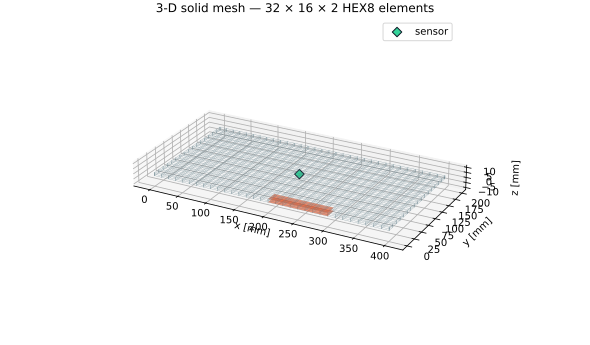
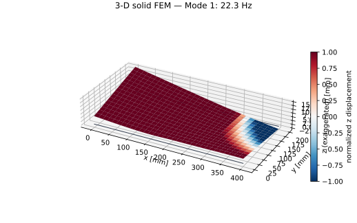
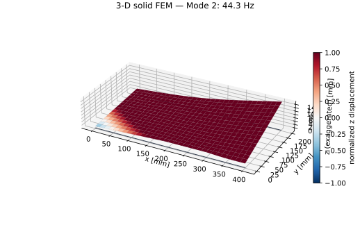
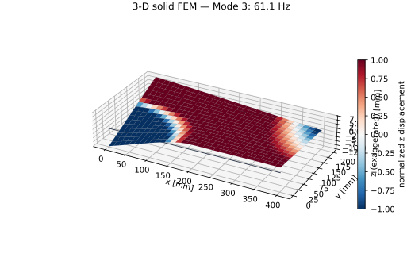
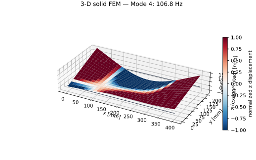
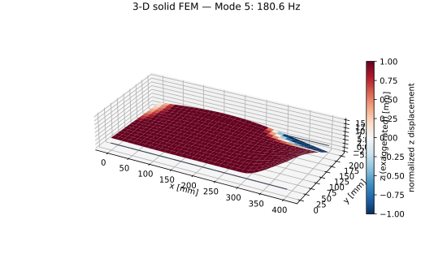
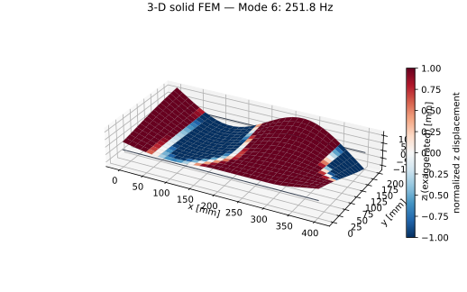
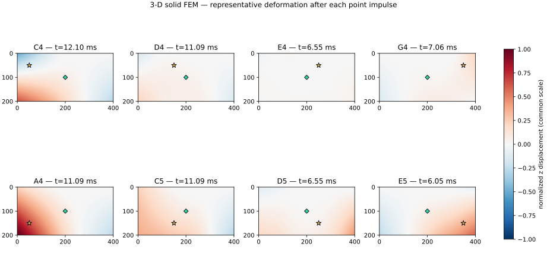

400 × 200 × 3 mmのPMMA板を、100 × 20 mmの領域で挟み込み固定します。センサは中央の1個だけです。既存のKirchhoff板モデルに加え、板厚方向を2層に分けたHEX8ソリッドモデルをDockerで解析しました。

| 要素・自由度 | HEX8、1,683節点、5,049自由度 | 3並進自由度/節点 |
|---|---|---|
| 要素寸法 | 12.5 × 12.5 × 1.5 mm | 板厚方向2要素 |
| 材料 | E=3.2 GPa、ν=0.35、ρ=1,180 kg/m³ | 等方・線形PMMA |
| 境界条件 | 固定領域54節点のXYZ変位を拘束 | 板厚全体を固定 |
| 固有値解法 | SciPy eigsh | shift-invert、σ=0 |
形状を見やすくするためZ変位を強調しています。色は正負方向の正規化Z変位で、実変位量ではありません。







60 msの物理時間を5秒のスローモーションとして表示しています。16固有モード、モード減衰比1.2%、Z方向単位力積の重ね合わせです。
中央センサ1個のZ加速度を6.4 kHz・2,048点で計算しています。打点を切り替えると、3DソリッドFEMの時間応答と卓越周波数を共通スケールで比較できます。計算と正規化の詳細は 中央センサ時間波形・FFT仕様 に記録しています。
81 × 41節点の薄板差分モデル。計算が軽く、固定位置や打点配置の設計探索に向きます。先頭4モードは22.56、38.71、64.89、86.21 Hzです。
板厚内応力と3方向変位を持ちます。メッシュ・質量・固定体積を直接表せます。先頭4モードは22.33、44.32、61.10、106.80 Hzです。
| 専用イメージ | acrylic-pan-solid-fem:local | CVATイメージを使用しない |
|---|---|---|
| 一時コンテナ | acrylic-pan-solid-fem-run | 終了時に自動削除 |
| ネットワーク | --network none | CVATネットワークから分離 |
| 書込み範囲 | web/assets/simulationのみ | 本プロジェクト内だけをbind mount |
.\run-solid-fem.ps1ビルド条件、固定バージョン、手動再現コマンド、制約は 3次元ソリッドFEM解析仕様 に記録しています。既存板モデルの詳細は 振動シミュレーション手法 を参照してください。
| コンテナ | Docker Desktop / Engine 28.0.4 | Linux/amd64、ネットワーク無効 |
|---|---|---|
| ランタイム | Python 3.12.13 | 専用実装 sim/solid_fem.py |
| 数値計算 | NumPy 2.2.6 / SciPy 1.15.3 | 疎行列・ARPACK eigsh・FFT |
| 可視化 | Matplotlib 3.10.3 | SVG・動画フレーム |
| 動画 | FFmpeg 7.1.5 | H.264 / yuv420p |
ソフトウェア、モデル、材料、メッシュ、打撃、FFT、Dockerの全条件は シミュレーション使用ソフト・実行条件 に集約しています。